Definición de estadios de Glaucoma (ojos izquierdos)
2018-09-26
Objetivo
En este estudio se pretende definir distintos grupos de gravedad de glaucoma (estadíos de desarrollo de la enfermedad) en función del grosor de los anillos neuroretinianos, mediante la técnica de las \(k\)-medias.
A continuación se muestran varias propuestas de agrupación basadas en distintas combinaciones de las variables que miden el grosor de los anillos neuroretinianos (BMO, anillo 3.5, anillo 4.1 y anillo 4.7).
Para cada propuesta de agrupación se muestra la distribución de los grupos obtenidos tanto para enfermos solos como para enfermos y sanos y se evalúa la bondad del modelo de clasificación en esos grupos mediante análisis discriminante con validación cruzada.
Análisis de componentes principales
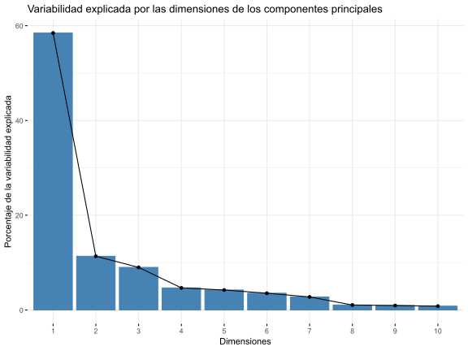
Se observa que la mayor parte de la variabilidad la explica la primera dimensión. Ello es debido a la alta correlación entre los sectores de los distintos anillos.
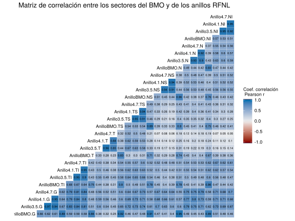
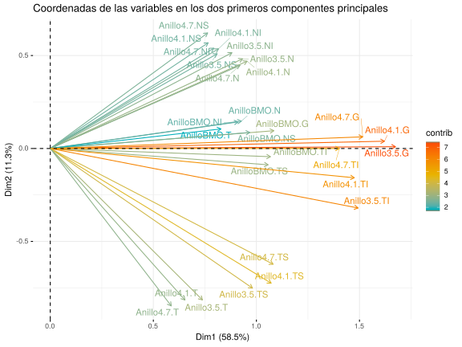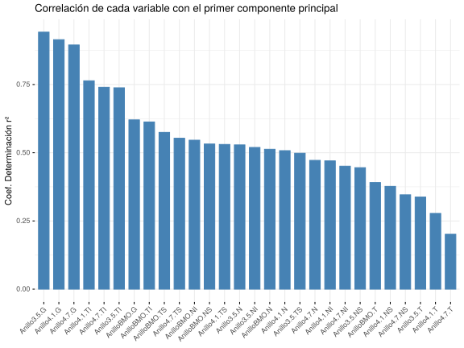
Se observa que los sectores que más peso tienen en el primer componente principal son el global y el temporal inferior de todos los anillos. Estas variables son precisamente las más correlacionadas entre si tal y como se aprecia en el siguente gráfico.
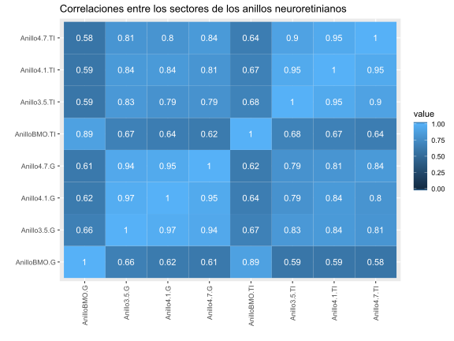
Clasificación de sanos y enfermos mediante análisis discriminante lineal usando componentes principales
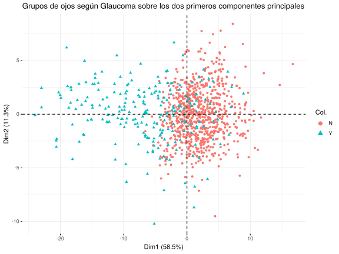
Como se observa los sanos y enfermos se separan bastante bien a lo largo del primer componente principal, aunque hay una zona de intersección donde se confunden. El segundo componente principal no ayuda en la separación de los grupos.
| N | Y | |
|---|---|---|
| N | 761 | 94 |
| Y | 4 | 132 |
| NA | NA | NA |
|---|---|---|
| NA | NA | NA |
El análisis discriminante lineal según los componentes prinicpales permite classificar correctamente el 90% de los ojos, con una sensibilidad del NA y una especificidad NA.
Distribución de sanos y enfermos según los principales sectores de los anillos neuroretinianos
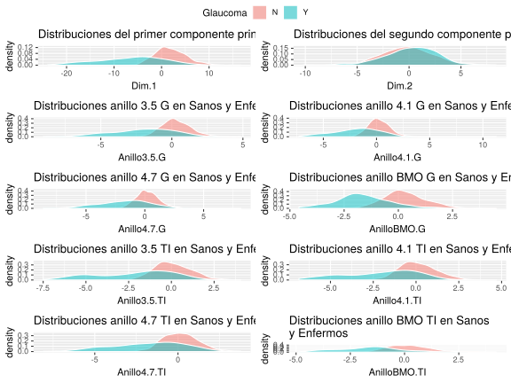
Así pues, a continuación se muestran distintos intentos de creación de grupos de estadio del glaucoma basados en los componentes principales y en distintas combinaciones de los sectores de los anillos, especialmente aquellos que tienen más importancia en el primer componente principal.
Agrupación mediante k-medias basada en el primer componente principal

A la vista del gráfico se decide crear 4 clusters.
Representación de los grupos sobre los componentes principales (sin incluir sanos)
Clasificación mediante análisis discriminante (sin incluir sanos)
| Sano | I | II | III | IV | |
|---|---|---|---|---|---|
| Sano | 0 | 0 | 0 | 0 | 0 |
| I | 0 | 47 | 0 | 0 | 0 |
| II | 0 | 3 | 78 | 3 | 0 |
| III | 0 | 0 | 3 | 52 | 1 |
| IV | 0 | 0 | 0 | 0 | 39 |
| Sensibilidad | Especificidad | Precisión.Global | |
|---|---|---|---|
| Estadio I | 0.94 | 1 | 0.97 |
| Estadio II | 0.963 | 0.9586 | 0.9608 |
| Estadio III | 0.9455 | 0.9766 | 0.961 |
| Estadio IV | 0.975 | 1 | 0.9875 |
Se observa que el 95.58% de los ojos están correctamente clasificados.
Representación de los grupos sobre los componentes principales (incluyendo sanos)
Distribución de los grupos de estadío del Glaucoma
Clasificación mediante análisis discriminante (incluyendo sanos)
| Sano | I | II | III | IV | |
|---|---|---|---|---|---|
| Sano | 758 | 49 | 43 | 0 | 0 |
| I | 2 | 1 | 0 | 0 | 0 |
| II | 5 | 0 | 33 | 6 | 0 |
| III | 0 | 0 | 5 | 49 | 3 |
| IV | 0 | 0 | 0 | 0 | 37 |
| Sensibilidad | Especificidad | Precisión.Global | |
|---|---|---|---|
| Estadio Sano | 0.9908 | 0.5929 | 0.7919 |
| Estadio I | 0.02 | 0.9979 | 0.5089 |
| Estadio II | 0.4074 | 0.9879 | 0.6977 |
| Estadio III | 0.8909 | 0.9915 | 0.9412 |
| Estadio IV | 0.925 | 1 | 0.9625 |
Se observa que el 88.6% de los ojos están correctamente clasificados. Como se puede ver, al incluir los ojos sanos en el modelo, la fiabilidad del modelo disminuye significativamente.
Agrupación mediante k-medias basada en los dos primeros componentes principales
Representación de los grupos sobre los componentes principales (sin incluir sanos)
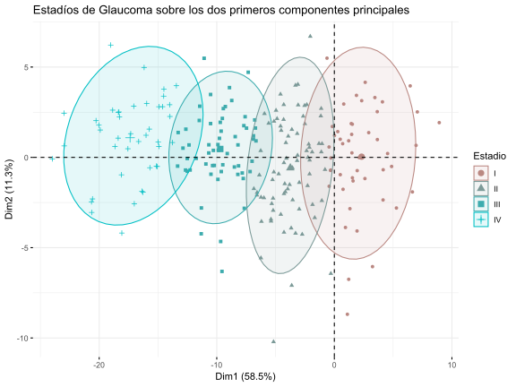
Clasificación mediante análisis discriminante (sin incluir sanos)
| Sano | I | II | III | IV | |
|---|---|---|---|---|---|
| Sano | 0 | 0 | 0 | 0 | 0 |
| I | 0 | 43 | 1 | 0 | 0 |
| II | 0 | 5 | 75 | 4 | 0 |
| III | 0 | 0 | 1 | 55 | 2 |
| IV | 0 | 0 | 0 | 0 | 40 |
| Sensibilidad | Especificidad | Precisión.Global | |
|---|---|---|---|
| Estadio I | 0.8958 | 0.9944 | 0.9451 |
| Estadio II | 0.974 | 0.9396 | 0.9568 |
| Estadio III | 0.9322 | 0.982 | 0.9571 |
| Estadio IV | 0.9524 | 1 | 0.9762 |
Se observa que el 94.25% de los ojos están correctamente clasificados.
Representación de los grupos sobre los componentes principales (incluyendo sanos)
Distribución de los grupos de estadío del Glaucoma
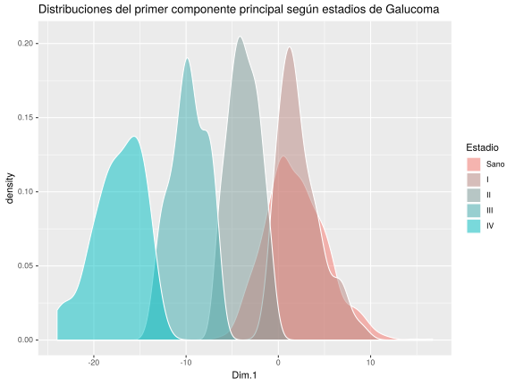
Clasificación mediante análisis discriminante (incluyendo sanos)
| Sano | I | II | III | IV | |
|---|---|---|---|---|---|
| Sano | 757 | 48 | 45 | 0 | 0 |
| I | 2 | 0 | 0 | 0 | 0 |
| II | 6 | 0 | 31 | 6 | 0 |
| III | 0 | 0 | 1 | 52 | 2 |
| IV | 0 | 0 | 0 | 1 | 40 |
| Sensibilidad | Especificidad | Precisión.Global | |
|---|---|---|---|
| Estadio Sano | 0.9895 | 0.5885 | 0.789 |
| Estadio I | 0 | 0.9979 | 0.4989 |
| Estadio II | 0.4026 | 0.9869 | 0.6947 |
| Estadio III | 0.8814 | 0.9968 | 0.9391 |
| Estadio IV | 0.9524 | 0.9989 | 0.9757 |
Se observa que el 88.8% de los ojos están correctamente clasificados. Como se puede ver, al incluir los ojos sanos en el modelo, la fiabilidad del modelo disminuye significativamente.
Agrupación mediante k-medias basada en los tres primeros componentes principales
Representación de los grupos sobre los componentes principales (sin incluir sanos)
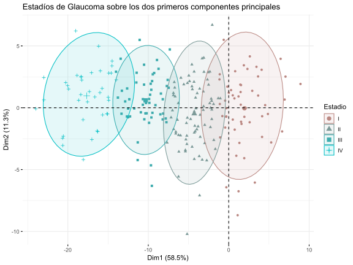
Clasificación mediante análisis discriminante (sin incluir sanos)
| Sano | I | II | III | IV | |
|---|---|---|---|---|---|
| Sano | 0 | 0 | 0 | 0 | 0 |
| I | 0 | 51 | 0 | 0 | 0 |
| II | 0 | 3 | 76 | 3 | 0 |
| III | 0 | 0 | 3 | 50 | 2 |
| IV | 0 | 0 | 0 | 1 | 37 |
| Sensibilidad | Especificidad | Precisión.Global | |
|---|---|---|---|
| Estadio I | 0.9444 | 1 | 0.9722 |
| Estadio II | 0.962 | 0.9592 | 0.9606 |
| Estadio III | 0.9259 | 0.9709 | 0.9484 |
| Estadio IV | 0.9487 | 0.9947 | 0.9717 |
Se observa que el 94.69% de los ojos están correctamente clasificados.
Representación de los grupos sobre los componentes principales (incluyendo sanos)
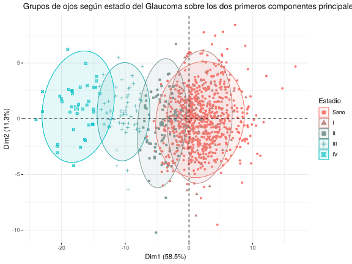
Distribución de los grupos de estadío del Glaucoma
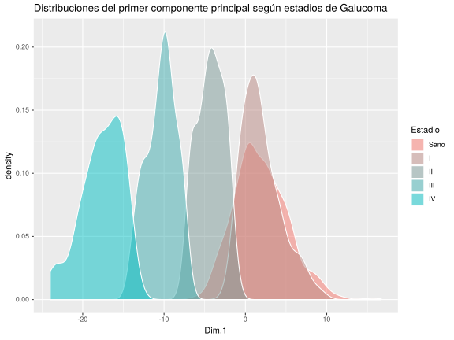
Clasificación mediante análisis discriminante (incluyendo sanos)
| Sano | I | II | III | IV | |
|---|---|---|---|---|---|
| Sano | 759 | 53 | 41 | 0 | 0 |
| I | 2 | 1 | 0 | 0 | 0 |
| II | 4 | 0 | 35 | 4 | 0 |
| III | 0 | 0 | 3 | 50 | 2 |
| IV | 0 | 0 | 0 | 0 | 37 |
| Sensibilidad | Especificidad | Precisión.Global | |
|---|---|---|---|
| Estadio Sano | 0.9922 | 0.5841 | 0.7881 |
| Estadio I | 0.01852 | 0.9979 | 0.5082 |
| Estadio II | 0.443 | 0.9912 | 0.7171 |
| Estadio III | 0.9259 | 0.9947 | 0.9603 |
| Estadio IV | 0.9487 | 1 | 0.9744 |
Se observa que el 89% de los ojos están correctamente clasificados. Como se puede ver, al incluir los ojos sanos en el modelo, la fiabilidad del modelo disminuye significativamente.
Agrupación mediante k-medias basada en todos los sectores de todos los anillos
Representación de los grupos sobre los componentes principales (sin incluir sanos)
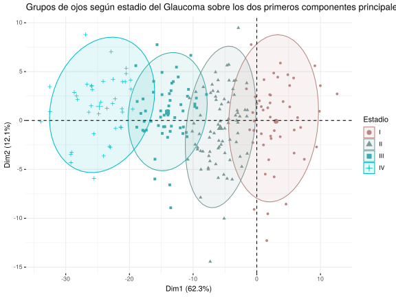
Clasificación mediante análisis discriminante (sin incluir sanos)
| Sano | I | II | III | IV | |
|---|---|---|---|---|---|
| Sano | 0 | 0 | 0 | 0 | 0 |
| I | 0 | 47 | 1 | 0 | 0 |
| II | 0 | 4 | 77 | 0 | 0 |
| III | 0 | 0 | 0 | 55 | 2 |
| IV | 0 | 0 | 0 | 1 | 39 |
| Sensibilidad | Especificidad | Precisión.Global | |
|---|---|---|---|
| Estadio I | 0.9216 | 0.9943 | 0.9579 |
| Estadio II | 0.9872 | 0.973 | 0.9801 |
| Estadio III | 0.9821 | 0.9882 | 0.9852 |
| Estadio IV | 0.9512 | 0.9946 | 0.9729 |
Se observa que el 96.46% de los ojos están correctamente clasificados.
Representación de los grupos sobre los componentes principales (incluyendo sanos)
Distribución de los grupos de estadío del Glaucoma
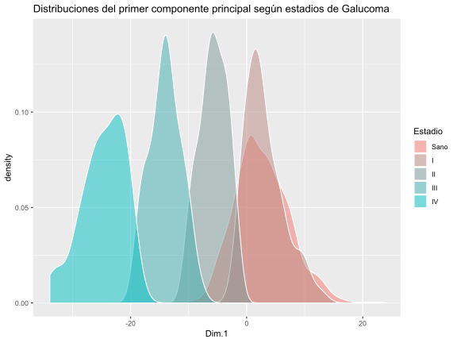
Clasificación mediante análisis discriminante (incluyendo sanos)
| Sano | I | II | III | IV | |
|---|---|---|---|---|---|
| Sano | 756 | 51 | 40 | 0 | 0 |
| I | 2 | 0 | 0 | 0 | 0 |
| II | 7 | 0 | 38 | 5 | 0 |
| III | 0 | 0 | 0 | 50 | 3 |
| IV | 0 | 0 | 0 | 1 | 38 |
| Sensibilidad | Especificidad | Precisión.Global | |
|---|---|---|---|
| Estadio Sano | 0.9882 | 0.5973 | 0.7928 |
| Estadio I | 0 | 0.9979 | 0.4989 |
| Estadio II | 0.4872 | 0.9869 | 0.737 |
| Estadio III | 0.8929 | 0.9968 | 0.9448 |
| Estadio IV | 0.9268 | 0.9989 | 0.9629 |
Se observa que el 89% de los ojos están correctamente clasificados. Como se puede ver, al incluir los ojos sanos en el modelo, la fiabilidad del modelo disminuye significativamente.
Agrupación mediante k-medias basada en los sectores global y temporal inferior de todos los anillos
Representación de los grupos sobre los componentes principales (sin incluir sanos)
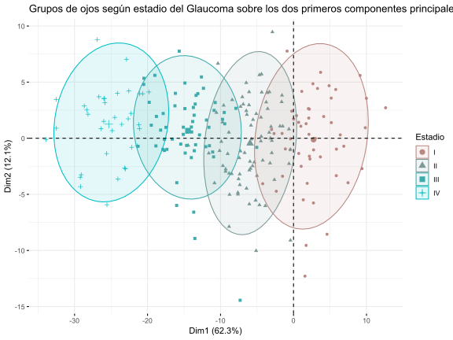
Clasificación mediante análisis discriminante (sin incluir sanos)
| Sano | I | II | III | IV | |
|---|---|---|---|---|---|
| Sano | 0 | 0 | 0 | 0 | 0 |
| I | 0 | 50 | 1 | 0 | 0 |
| II | 0 | 2 | 75 | 4 | 0 |
| III | 0 | 0 | 3 | 53 | 1 |
| IV | 0 | 0 | 0 | 2 | 35 |
| Sensibilidad | Especificidad | Precisión.Global | |
|---|---|---|---|
| Estadio I | 0.9615 | 0.9943 | 0.9779 |
| Estadio II | 0.9494 | 0.9592 | 0.9543 |
| Estadio III | 0.8983 | 0.976 | 0.9372 |
| Estadio IV | 0.9722 | 0.9895 | 0.9808 |
Se observa que el 94.25% de los ojos están correctamente clasificados.
Representación de los grupos sobre los componentes principales (incluyendo sanos)
Distribución de los grupos de estadío del Glaucoma
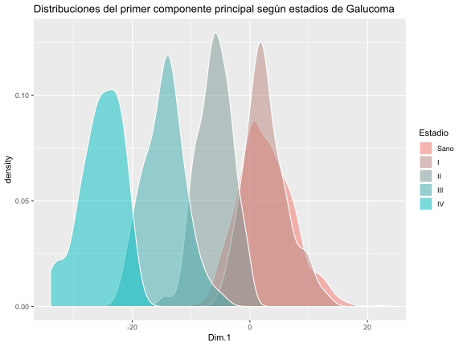
Clasificación mediante análisis discriminante (incluyendo sanos)
| Sano | I | II | III | IV | |
|---|---|---|---|---|---|
| Sano | 759 | 51 | 42 | 2 | 0 |
| I | 2 | 1 | 0 | 0 | 0 |
| II | 4 | 0 | 35 | 3 | 0 |
| III | 0 | 0 | 2 | 51 | 3 |
| IV | 0 | 0 | 0 | 3 | 33 |
| Sensibilidad | Especificidad | Precisión.Global | |
|---|---|---|---|
| Estadio Sano | 0.9922 | 0.5796 | 0.7859 |
| Estadio I | 0.01923 | 0.9979 | 0.5086 |
| Estadio II | 0.443 | 0.9923 | 0.7177 |
| Estadio III | 0.8644 | 0.9946 | 0.9295 |
| Estadio IV | 0.9167 | 0.9969 | 0.9568 |
Se observa que el 88.7% de los ojos están correctamente clasificados. Como se puede ver, al incluir los ojos sanos en el modelo, la fiabilidad del modelo disminuye significativamente.
Agrupación mediante k-medias basada en los sectores globales de todos los anillos
Representación de los grupos sobre los componentes principales (sin incluir sanos)

Clasificación mediante análisis discriminante (sin incluir sanos)
| Sano | I | II | III | IV | |
|---|---|---|---|---|---|
| Sano | 0 | 0 | 0 | 0 | 0 |
| I | 0 | 43 | 0 | 0 | 0 |
| II | 0 | 2 | 71 | 3 | 0 |
| III | 0 | 0 | 1 | 63 | 1 |
| IV | 0 | 0 | 0 | 1 | 41 |
| Sensibilidad | Especificidad | Precisión.Global | |
|---|---|---|---|
| Estadio I | 0.9556 | 1 | 0.9778 |
| Estadio II | 0.9861 | 0.9675 | 0.9768 |
| Estadio III | 0.9403 | 0.9874 | 0.9639 |
| Estadio IV | 0.9762 | 0.9946 | 0.9854 |
Se observa que el 96.46% de los ojos están correctamente clasificados.
Representación de los grupos sobre los componentes principales (incluyendo sanos)
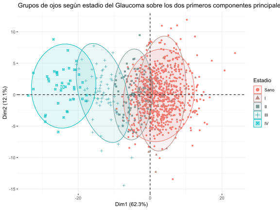
Distribución de los grupos de estadío del Glaucoma
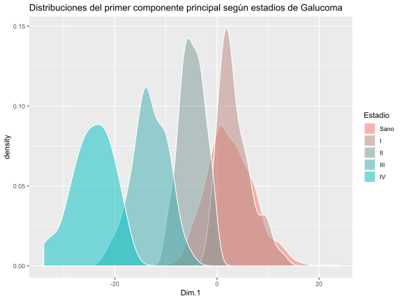
Intervalos del confianza para la media de los grupos de estadio del Glaucoma
| Sector | Estadio | Media | Desviación.Típica | Lím.inf.IC | Lím.sup.IC |
|---|---|---|---|---|---|
| AnilloBMO.G | Sano | 0.34 | 1.037 | 0.2664 | 0.4136 |
| AnilloBMO.G | I | -0.3186 | 1.024 | -0.6264 | -0.01092 |
| AnilloBMO.G | II | -1.356 | 0.809 | -1.547 | -1.166 |
| AnilloBMO.G | III | -2.04 | 0.9309 | -2.267 | -1.812 |
| AnilloBMO.G | IV | -2.987 | 1.009 | -3.301 | -2.672 |
| Anillo3.5.G | Sano | 0.3165 | 1.044 | 0.2423 | 0.3906 |
| Anillo3.5.G | I | 0.724 | 0.6843 | 0.5184 | 0.9296 |
| Anillo3.5.G | II | -1.088 | 0.6361 | -1.238 | -0.939 |
| Anillo3.5.G | III | -2.949 | 0.7314 | -3.127 | -2.771 |
| Anillo3.5.G | IV | -5.495 | 1.11 | -5.84 | -5.149 |
| Anillo4.1.G | Sano | 0.2628 | 1.111 | 0.184 | 0.3417 |
| Anillo4.1.G | I | 0.835 | 0.685 | 0.6292 | 1.041 |
| Anillo4.1.G | II | -0.9556 | 0.5366 | -1.082 | -0.8295 |
| Anillo4.1.G | III | -2.788 | 0.6544 | -2.948 | -2.628 |
| Anillo4.1.G | IV | -5.31 | 0.9708 | -5.613 | -5.008 |
| Anillo4.7.G | Sano | 0.2549 | 1.02 | 0.1826 | 0.3273 |
| Anillo4.7.G | I | 1.001 | 0.7566 | 0.7741 | 1.229 |
| Anillo4.7.G | II | -0.81 | 0.5853 | -0.9476 | -0.6725 |
| Anillo4.7.G | III | -2.59 | 0.7784 | -2.779 | -2.4 |
| Anillo4.7.G | IV | -5.036 | 1.051 | -5.364 | -4.708 |
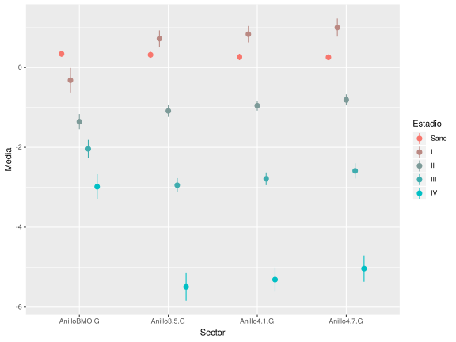
Clasificación mediante análisis discriminante (incluyendo sanos)
| Sano | I | II | III | IV | |
|---|---|---|---|---|---|
| Sano | 760 | 44 | 46 | 4 | 0 |
| I | 2 | 1 | 0 | 0 | 0 |
| II | 2 | 0 | 23 | 7 | 0 |
| III | 1 | 0 | 3 | 54 | 3 |
| IV | 0 | 0 | 0 | 2 | 39 |
| Sensibilidad | Especificidad | Precisión.Global | |
|---|---|---|---|
| Estadio Sano | 0.9935 | 0.5841 | 0.7888 |
| Estadio I | 0.02222 | 0.9979 | 0.5101 |
| Estadio II | 0.3194 | 0.9902 | 0.6548 |
| Estadio III | 0.806 | 0.9924 | 0.8992 |
| Estadio IV | 0.9286 | 0.9979 | 0.9632 |
Se observa que el 88.5% de los ojos están correctamente clasificados. Como se puede ver, al incluir los ojos sanos en el modelo, la fiabilidad del modelo disminuye significativamente.
Agrupación mediante k-medias basada en los sectores temporales inferiores de todos los anillos
Representación de los grupos sobre los componentes principales (sin incluir sanos)
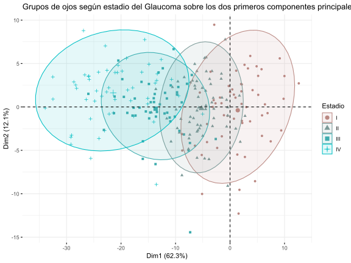
Clasificación mediante análisis discriminante (sin incluir sanos)
| Sano | I | II | III | IV | |
|---|---|---|---|---|---|
| Sano | 0 | 0 | 0 | 0 | 0 |
| I | 0 | 49 | 5 | 0 | 0 |
| II | 0 | 8 | 58 | 3 | 0 |
| III | 0 | 0 | 2 | 46 | 2 |
| IV | 0 | 0 | 0 | 2 | 51 |
| Sensibilidad | Especificidad | Precisión.Global | |
|---|---|---|---|
| Estadio I | 0.8596 | 0.9704 | 0.915 |
| Estadio II | 0.8923 | 0.9317 | 0.912 |
| Estadio III | 0.902 | 0.9771 | 0.9396 |
| Estadio IV | 0.9623 | 0.9884 | 0.9754 |
Se observa que el 90.27% de los ojos están correctamente clasificados.
Representación de los grupos sobre los componentes principales (incluyendo sanos)
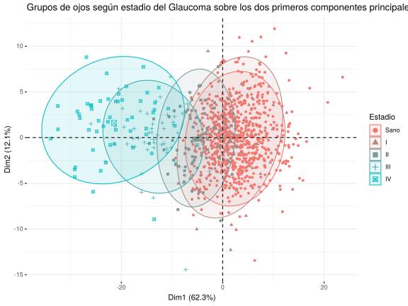
Distribución de los grupos de estadío del Glaucoma
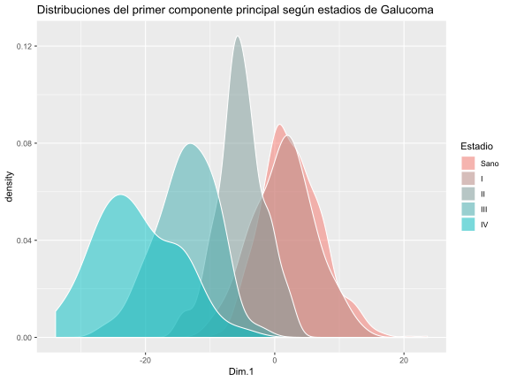
Clasificación mediante análisis discriminante (incluyendo sanos)
| Sano | I | II | III | IV | |
|---|---|---|---|---|---|
| Sano | 762 | 54 | 45 | 3 | 0 |
| I | 1 | 1 | 0 | 0 | 0 |
| II | 2 | 2 | 17 | 5 | 0 |
| III | 0 | 0 | 3 | 41 | 2 |
| IV | 0 | 0 | 0 | 2 | 51 |
| Sensibilidad | Especificidad | Precisión.Global | |
|---|---|---|---|
| Estadio Sano | 0.9961 | 0.5487 | 0.7724 |
| Estadio I | 0.01754 | 0.9989 | 0.5082 |
| Estadio II | 0.2615 | 0.9903 | 0.6259 |
| Estadio III | 0.8039 | 0.9947 | 0.8993 |
| Estadio IV | 0.9623 | 0.9979 | 0.9801 |
Se observa que el 87.99% de los ojos están correctamente clasificados. Como se puede ver, al incluir los ojos sanos en el modelo, la fiabilidad del modelo disminuye significativamente.
Agrupación mediante k-medias basada en los sectores global y temporal inferior de los anillos BMO y 3.5
Representación de los grupos sobre los componentes principales (sin incluir sanos)
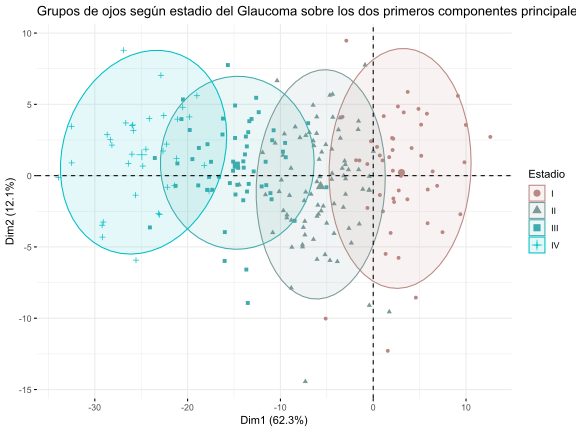
Clasificación mediante análisis discriminante (sin incluir sanos)
| Sano | I | II | III | IV | |
|---|---|---|---|---|---|
| Sano | 0 | 0 | 0 | 0 | 0 |
| I | 0 | 42 | 0 | 0 | 0 |
| II | 0 | 5 | 81 | 5 | 0 |
| III | 0 | 0 | 4 | 51 | 3 |
| IV | 0 | 0 | 0 | 2 | 33 |
| Sensibilidad | Especificidad | Precisión.Global | |
|---|---|---|---|
| Estadio I | 0.8936 | 1 | 0.9468 |
| Estadio II | 0.9529 | 0.9291 | 0.941 |
| Estadio III | 0.8793 | 0.9583 | 0.9188 |
| Estadio IV | 0.9167 | 0.9895 | 0.9531 |
Se observa que el 91.59% de los ojos están correctamente clasificados.
Representación de los grupos sobre los componentes principales (incluyendo sanos)
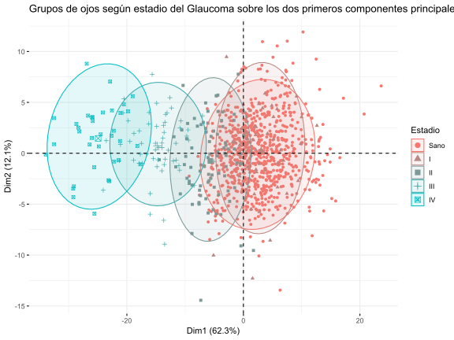
Distribución de los grupos de estadío del Glaucoma
Intervalos del confianza para la media de los grupos de estadio del Glaucoma
| Sector | Estadio | Media | Desviación.Típica | Lím.inf.IC | Lím.sup.IC |
|---|---|---|---|---|---|
| AnilloBMO.G | Sano | 0.34 | 1.037 | 0.2664 | 0.4136 |
| AnilloBMO.G | I | -0.09 | 0.8967 | -0.3533 | 0.1733 |
| AnilloBMO.G | II | -1.529 | 0.6831 | -1.676 | -1.382 |
| AnilloBMO.G | III | -2.039 | 0.7774 | -2.243 | -1.834 |
| AnilloBMO.G | IV | -3.379 | 0.7584 | -3.636 | -3.122 |
| AnilloBMO.TI | Sano | 0.2184 | 0.9992 | 0.1475 | 0.2893 |
| AnilloBMO.TI | I | 0.0743 | 0.897 | -0.1891 | 0.3377 |
| AnilloBMO.TI | II | -1.305 | 0.6728 | -1.45 | -1.16 |
| AnilloBMO.TI | III | -2.38 | 0.8206 | -2.596 | -2.164 |
| AnilloBMO.TI | IV | -3.692 | 0.6175 | -3.9 | -3.483 |
| Anillo3.5.G | Sano | 0.3165 | 1.044 | 0.2423 | 0.3906 |
| Anillo3.5.G | I | 0.5407 | 0.9352 | 0.2661 | 0.8153 |
| Anillo3.5.G | II | -1.293 | 0.8552 | -1.478 | -1.109 |
| Anillo3.5.G | III | -3.281 | 1.039 | -3.554 | -3.008 |
| Anillo3.5.G | IV | -5.538 | 1.164 | -5.931 | -5.144 |
| Anillo3.5.TI | Sano | 0.07504 | 1.114 | -0.004048 | 0.1541 |
| Anillo3.5.TI | I | 0.1684 | 0.7254 | -0.04453 | 0.3814 |
| Anillo3.5.TI | II | -1.022 | 0.9494 | -1.227 | -0.8175 |
| Anillo3.5.TI | III | -3.788 | 1.164 | -4.094 | -3.482 |
| Anillo3.5.TI | IV | -5.56 | 0.8651 | -5.853 | -5.267 |
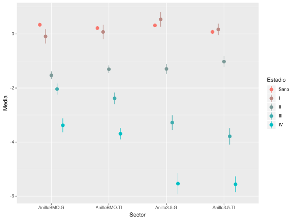
Clasificación mediante análisis discriminante (incluyendo sanos)
| Sano | I | II | III | IV | |
|---|---|---|---|---|---|
| Sano | 757 | 47 | 40 | 2 | 0 |
| I | 1 | 0 | 0 | 0 | 0 |
| II | 7 | 0 | 41 | 4 | 0 |
| III | 0 | 0 | 4 | 46 | 4 |
| IV | 0 | 0 | 0 | 6 | 32 |
| Sensibilidad | Especificidad | Precisión.Global | |
|---|---|---|---|
| Estadio Sano | 0.9895 | 0.6062 | 0.7979 |
| Estadio I | 0 | 0.9989 | 0.4995 |
| Estadio II | 0.4824 | 0.9879 | 0.7351 |
| Estadio III | 0.7931 | 0.9914 | 0.8923 |
| Estadio IV | 0.8889 | 0.9937 | 0.9413 |
Se observa que el 88.4% de los ojos están correctamente clasificados. Como se puede ver, al incluir los ojos sanos en el modelo, la fiabilidad del modelo disminuye significativamente.
Agrupación mediante k-medias basada en los sectores global y temporal inferior del anillo BMO
Representación de los grupos sobre los componentes principales (sin incluir sanos)
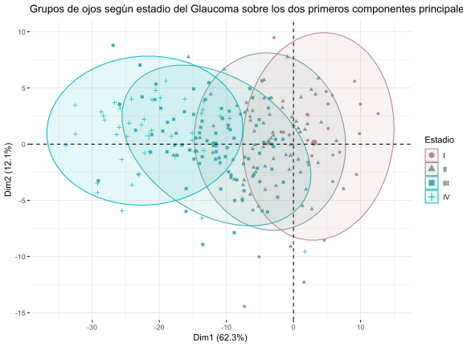
Clasificación mediante análisis discriminante (sin incluir sanos)
| Sano | I | II | III | IV | |
|---|---|---|---|---|---|
| Sano | 0 | 0 | 0 | 0 | 0 |
| I | 0 | 22 | 2 | 0 | 0 |
| II | 0 | 6 | 58 | 10 | 0 |
| III | 0 | 0 | 11 | 71 | 9 |
| IV | 0 | 0 | 0 | 3 | 34 |
| Sensibilidad | Especificidad | Precisión.Global | |
|---|---|---|---|
| Estadio I | 0.7857 | 0.9899 | 0.8878 |
| Estadio II | 0.8169 | 0.8968 | 0.8568 |
| Estadio III | 0.8452 | 0.8592 | 0.8522 |
| Estadio IV | 0.7907 | 0.9836 | 0.8872 |
Se observa que el 81.86% de los ojos están correctamente clasificados.
Representación de los grupos sobre los componentes principales (incluyendo sanos)

Distribución de los grupos de estadío del Glaucoma
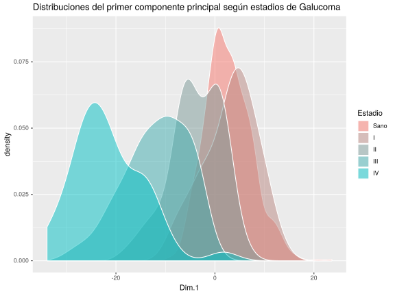
Clasificación mediante análisis discriminante (incluyendo sanos)
| Sano | I | II | III | IV | |
|---|---|---|---|---|---|
| Sano | 762 | 28 | 57 | 14 | 1 |
| I | 0 | 0 | 0 | 0 | 0 |
| II | 1 | 0 | 3 | 8 | 0 |
| III | 2 | 0 | 11 | 48 | 7 |
| IV | 0 | 0 | 0 | 14 | 35 |
| Sensibilidad | Especificidad | Precisión.Global | |
|---|---|---|---|
| Estadio Sano | 0.9961 | 0.5575 | 0.7768 |
| Estadio I | 0 | 1 | 0.5 |
| Estadio II | 0.04225 | 0.9902 | 0.5162 |
| Estadio III | 0.5714 | 0.9779 | 0.7747 |
| Estadio IV | 0.814 | 0.9852 | 0.8996 |
Se observa que el 85.57% de los ojos están correctamente clasificados. Como se puede ver, al incluir los ojos sanos en el modelo, la fiabilidad del modelo disminuye significativamente.
Agrupación mediante k-medias basada en los sectores global y temporal inferior del anillo 3.5
Representación de los grupos sobre los componentes principales (sin incluir sanos)
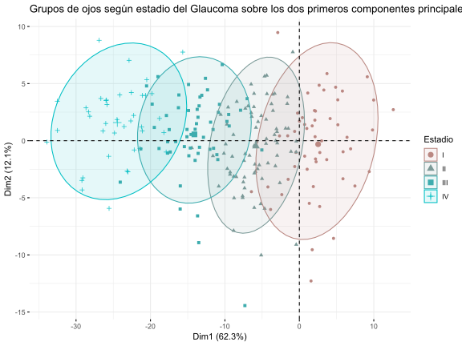
Clasificación mediante análisis discriminante (sin incluir sanos)
| Sano | I | II | III | IV | |
|---|---|---|---|---|---|
| Sano | 0 | 0 | 0 | 0 | 0 |
| I | 0 | 47 | 5 | 0 | 0 |
| II | 0 | 6 | 69 | 5 | 0 |
| III | 0 | 0 | 2 | 48 | 5 |
| IV | 0 | 0 | 0 | 4 | 35 |
| Sensibilidad | Especificidad | Precisión.Global | |
|---|---|---|---|
| Estadio I | 0.8868 | 0.9711 | 0.9289 |
| Estadio II | 0.9079 | 0.9267 | 0.9173 |
| Estadio III | 0.8421 | 0.9586 | 0.9003 |
| Estadio IV | 0.875 | 0.9785 | 0.9267 |
Se observa que el 88.05% de los ojos están correctamente clasificados.
Representación de los grupos sobre los componentes principales (incluyendo sanos)
Distribución de los grupos de estadío del Glaucoma
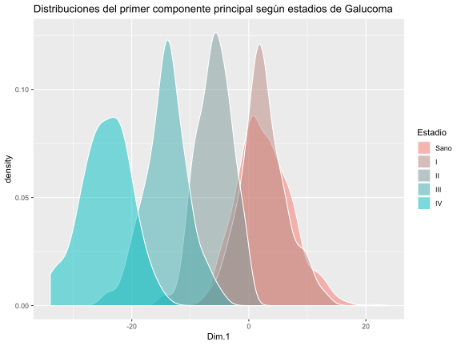
Clasificación mediante análisis discriminante (incluyendo sanos)
| Sano | I | II | III | IV | |
|---|---|---|---|---|---|
| Sano | 760 | 52 | 40 | 2 | 0 |
| I | 2 | 1 | 0 | 0 | 0 |
| II | 3 | 0 | 35 | 3 | 0 |
| III | 0 | 0 | 1 | 47 | 6 |
| IV | 0 | 0 | 0 | 5 | 34 |
| Sensibilidad | Especificidad | Precisión.Global | |
|---|---|---|---|
| Estadio Sano | 0.9935 | 0.5841 | 0.7888 |
| Estadio I | 0.01887 | 0.9979 | 0.5084 |
| Estadio II | 0.4605 | 0.9934 | 0.727 |
| Estadio III | 0.8246 | 0.9925 | 0.9085 |
| Estadio IV | 0.85 | 0.9947 | 0.9224 |
Se observa que el 88.5% de los ojos están correctamente clasificados. Como se puede ver, al incluir los ojos sanos en el modelo, la fiabilidad del modelo disminuye significativamente.
Agrupación mediante k-medias basada en los sectores globales de los anillos BMO y 3.5
Representación de los grupos sobre los componentes principales (sin incluir sanos)
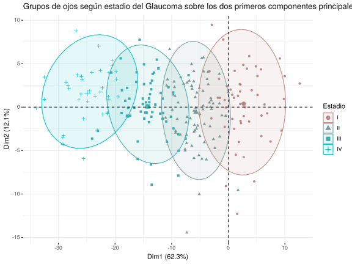
Clasificación mediante análisis discriminante (sin incluir sanos)
| Sano | I | II | III | IV | |
|---|---|---|---|---|---|
| Sano | 0 | 0 | 0 | 0 | 0 |
| I | 0 | 46 | 1 | 0 | 0 |
| II | 0 | 6 | 70 | 9 | 0 |
| III | 0 | 0 | 5 | 48 | 2 |
| IV | 0 | 0 | 0 | 3 | 36 |
| Sensibilidad | Especificidad | Precisión.Global | |
|---|---|---|---|
| Estadio I | 0.8846 | 0.9943 | 0.9394 |
| Estadio II | 0.9211 | 0.9 | 0.9105 |
| Estadio III | 0.8 | 0.9578 | 0.8789 |
| Estadio IV | 0.9474 | 0.984 | 0.9657 |
Se observa que el 88.5% de los ojos están correctamente clasificados.
Representación de los grupos sobre los componentes principales (incluyendo sanos)
Distribución de los grupos de estadío del Glaucoma
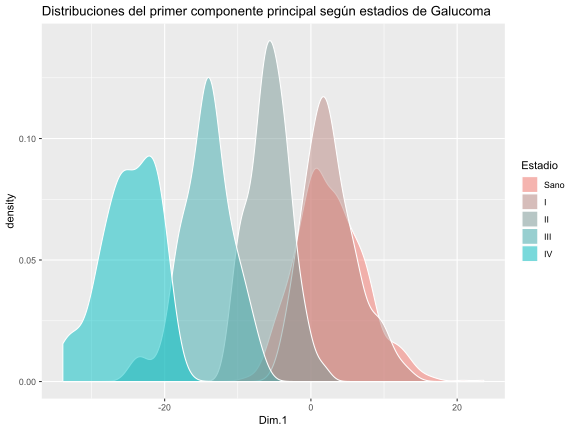
Clasificación mediante análisis discriminante (incluyendo sanos)
| Sano | I | II | III | IV | |
|---|---|---|---|---|---|
| Sano | 757 | 52 | 41 | 1 | 0 |
| I | 2 | 0 | 0 | 0 | 0 |
| II | 6 | 0 | 30 | 8 | 0 |
| III | 0 | 0 | 5 | 47 | 4 |
| IV | 0 | 0 | 0 | 4 | 34 |
| Sensibilidad | Especificidad | Precisión.Global | |
|---|---|---|---|
| Estadio Sano | 0.9895 | 0.5841 | 0.7868 |
| Estadio I | 0 | 0.9979 | 0.4989 |
| Estadio II | 0.3947 | 0.9847 | 0.6897 |
| Estadio III | 0.7833 | 0.9903 | 0.8868 |
| Estadio IV | 0.8947 | 0.9958 | 0.9453 |
Se observa que el 87.59% de los ojos están correctamente clasificados. Como se puede ver, al incluir los ojos sanos en el modelo, la fiabilidad del modelo disminuye significativamente.
Agrupación mediante k-medias basada en los sectores temporales inferiores de los anillos BMO y 3.5
Representación de los grupos sobre los componentes principales (sin incluir sanos)
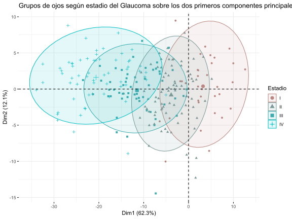
Clasificación mediante análisis discriminante (sin incluir sanos)
| Sano | I | II | III | IV | |
|---|---|---|---|---|---|
| Sano | 0 | 0 | 0 | 0 | 0 |
| I | 0 | 20 | 6 | 0 | 0 |
| II | 0 | 14 | 63 | 10 | 0 |
| III | 0 | 0 | 6 | 43 | 6 |
| IV | 0 | 0 | 0 | 2 | 56 |
| Sensibilidad | Especificidad | Precisión.Global | |
|---|---|---|---|
| Estadio I | 0.5882 | 0.9688 | 0.7785 |
| Estadio II | 0.84 | 0.8411 | 0.8405 |
| Estadio III | 0.7818 | 0.9298 | 0.8558 |
| Estadio IV | 0.9032 | 0.9878 | 0.9455 |
Se observa que el 80.53% de los ojos están correctamente clasificados.
Representación de los grupos sobre los componentes principales (incluyendo sanos)
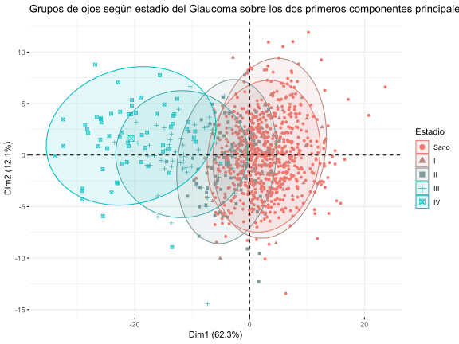
Distribución de los grupos de estadío del Glaucoma
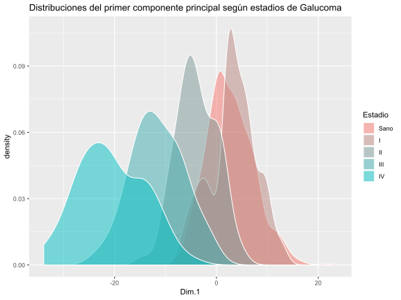
Clasificación mediante análisis discriminante (incluyendo sanos)
| Sano | I | II | III | IV | |
|---|---|---|---|---|---|
| Sano | 763 | 33 | 47 | 13 | 0 |
| I | 0 | 0 | 0 | 0 | 0 |
| II | 1 | 1 | 26 | 4 | 0 |
| III | 1 | 0 | 2 | 35 | 6 |
| IV | 0 | 0 | 0 | 3 | 56 |
| Sensibilidad | Especificidad | Precisión.Global | |
|---|---|---|---|
| Estadio Sano | 0.9974 | 0.5885 | 0.7929 |
| Estadio I | 0 | 1 | 0.5 |
| Estadio II | 0.3467 | 0.9934 | 0.6701 |
| Estadio III | 0.6364 | 0.9904 | 0.8134 |
| Estadio IV | 0.9032 | 0.9968 | 0.95 |
Se observa que el 88.8% de los ojos están correctamente clasificados. Como se puede ver, al incluir los ojos sanos en el modelo, la fiabilidad del modelo disminuye significativamente.
Agrupación mediante k-medias basada en el sector global del anillo BMO
Representación de los grupos sobre los componentes principales (sin incluir sanos)
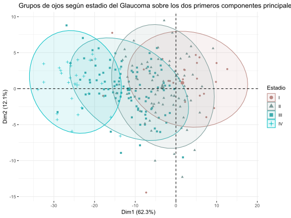
Clasificación mediante análisis discriminante (sin incluir sanos)
| Sano | I | II | III | IV | |
|---|---|---|---|---|---|
| Sano | 0 | 0 | 0 | 0 | 0 |
| I | 0 | 21 | 1 | 0 | 0 |
| II | 0 | 3 | 68 | 3 | 0 |
| III | 0 | 0 | 3 | 96 | 3 |
| IV | 0 | 0 | 0 | 1 | 27 |
| Sensibilidad | Especificidad | Precisión.Global | |
|---|---|---|---|
| Estadio I | 0.875 | 0.995 | 0.935 |
| Estadio II | 0.9444 | 0.961 | 0.9527 |
| Estadio III | 0.96 | 0.9524 | 0.9562 |
| Estadio IV | 0.9 | 0.9949 | 0.9474 |
Se observa que el 93.81% de los ojos están correctamente clasificados.
Representación de los grupos sobre los componentes principales (incluyendo sanos)
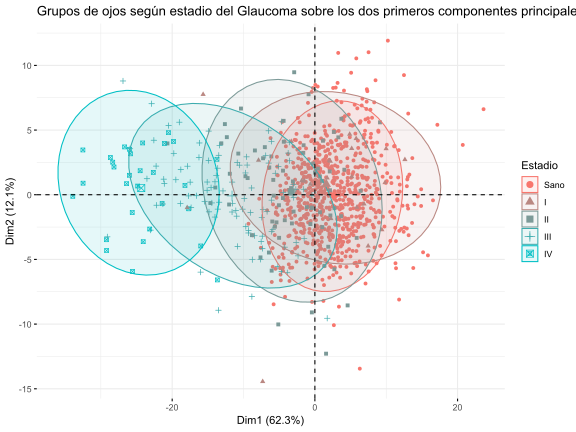
Distribución de los grupos de estadío del Glaucoma
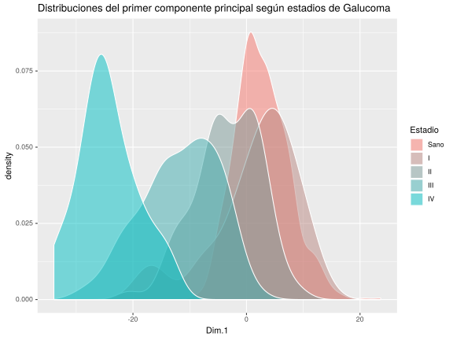
Clasificación mediante análisis discriminante (incluyendo sanos)
| Sano | I | II | III | IV | |
|---|---|---|---|---|---|
| Sano | 762 | 22 | 60 | 18 | 0 |
| I | 0 | 0 | 0 | 0 | 0 |
| II | 1 | 0 | 0 | 3 | 0 |
| III | 2 | 2 | 11 | 70 | 5 |
| IV | 0 | 0 | 1 | 9 | 25 |
| Sensibilidad | Especificidad | Precisión.Global | |
|---|---|---|---|
| Estadio Sano | 0.9961 | 0.5575 | 0.7768 |
| Estadio I | 0 | 1 | 0.5 |
| Estadio II | 0 | 0.9956 | 0.4978 |
| Estadio III | 0.7 | 0.9776 | 0.8388 |
| Estadio IV | 0.8333 | 0.9896 | 0.9115 |
Se observa que el 86.48% de los ojos están correctamente clasificados. Como se puede ver, al incluir los ojos sanos en el modelo, la fiabilidad del modelo disminuye significativamente.
Agrupación mediante k-medias basada en el sector global del anillo 3.5
Representación de los grupos sobre los componentes principales (sin incluir sanos)
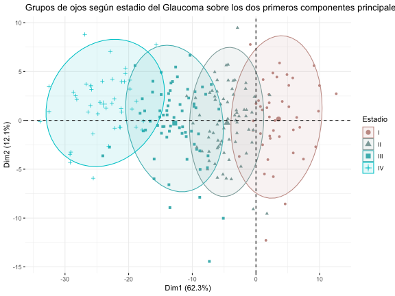
Clasificación mediante análisis discriminante (sin incluir sanos)
| Sano | I | II | III | IV | |
|---|---|---|---|---|---|
| Sano | 0 | 0 | 0 | 0 | 0 |
| I | 0 | 38 | 4 | 0 | 0 |
| II | 0 | 5 | 63 | 7 | 0 |
| III | 0 | 0 | 4 | 59 | 3 |
| IV | 0 | 0 | 0 | 2 | 41 |
| Sensibilidad | Especificidad | Precisión.Global | |
|---|---|---|---|
| Estadio I | 0.8837 | 0.9781 | 0.9309 |
| Estadio II | 0.8873 | 0.9226 | 0.905 |
| Estadio III | 0.8676 | 0.9557 | 0.9117 |
| Estadio IV | 0.9318 | 0.989 | 0.9604 |
Se observa que el 88.94% de los ojos están correctamente clasificados.
Representación de los grupos sobre los componentes principales (incluyendo sanos)
Distribución de los grupos de estadío del Glaucoma
Clasificación mediante análisis discriminante (incluyendo sanos)
| Sano | I | II | III | IV | |
|---|---|---|---|---|---|
| Sano | 760 | 43 | 47 | 6 | 0 |
| I | 2 | 0 | 0 | 0 | 0 |
| II | 2 | 0 | 20 | 9 | 0 |
| III | 1 | 0 | 4 | 50 | 3 |
| IV | 0 | 0 | 0 | 3 | 41 |
| Sensibilidad | Especificidad | Precisión.Global | |
|---|---|---|---|
| Estadio Sano | 0.9935 | 0.5752 | 0.7843 |
| Estadio I | 0 | 0.9979 | 0.4989 |
| Estadio II | 0.2817 | 0.988 | 0.6349 |
| Estadio III | 0.7353 | 0.9913 | 0.8633 |
| Estadio IV | 0.9318 | 0.9968 | 0.9643 |
Se observa que el 87.89% de los ojos están correctamente clasificados. Como se puede ver, al incluir los ojos sanos en el modelo, la fiabilidad del modelo disminuye significativamente.
Agrupación mediante k-medias basada en el sector temporal inferior del anillo BMO
Representación de los grupos sobre los componentes principales (sin incluir sanos)
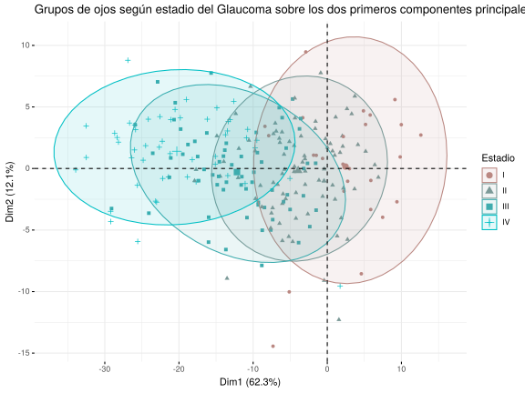
Clasificación mediante análisis discriminante (sin incluir sanos)
| Sano | I | II | III | IV | |
|---|---|---|---|---|---|
| Sano | 0 | 0 | 0 | 0 | 0 |
| I | 0 | 19 | 5 | 1 | 0 |
| II | 0 | 7 | 67 | 16 | 1 |
| III | 0 | 0 | 11 | 41 | 7 |
| IV | 0 | 0 | 1 | 7 | 43 |
| Sensibilidad | Especificidad | Precisión.Global | |
|---|---|---|---|
| Estadio I | 0.7308 | 0.97 | 0.8504 |
| Estadio II | 0.7976 | 0.831 | 0.8143 |
| Estadio III | 0.6308 | 0.8882 | 0.7595 |
| Estadio IV | 0.8431 | 0.9543 | 0.8987 |
Se observa que el 75.22% de los ojos están correctamente clasificados.
Representación de los grupos sobre los componentes principales (incluyendo sanos)
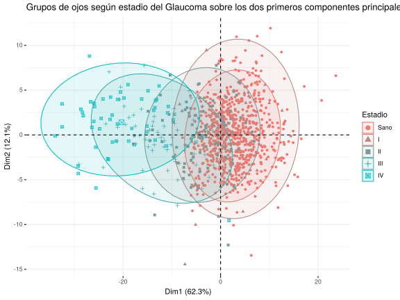
Distribución de los grupos de estadío del Glaucoma
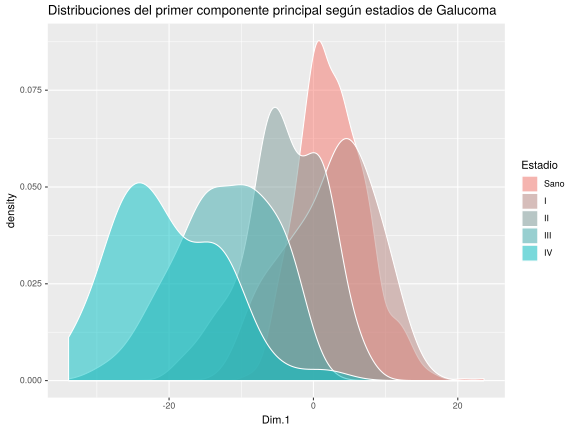
Clasificación mediante análisis discriminante (incluyendo sanos)
| Sano | I | II | III | IV | |
|---|---|---|---|---|---|
| Sano | 763 | 26 | 59 | 9 | 2 |
| I | 0 | 0 | 0 | 0 | 0 |
| II | 1 | 0 | 13 | 12 | 0 |
| III | 1 | 0 | 11 | 31 | 7 |
| IV | 0 | 0 | 1 | 13 | 42 |
| Sensibilidad | Especificidad | Precisión.Global | |
|---|---|---|---|
| Estadio Sano | 0.9974 | 0.5752 | 0.7863 |
| Estadio I | 0 | 1 | 0.5 |
| Estadio II | 0.1548 | 0.9857 | 0.5702 |
| Estadio III | 0.4769 | 0.9795 | 0.7282 |
| Estadio IV | 0.8235 | 0.9851 | 0.9043 |
Se observa que el 85.67% de los ojos están correctamente clasificados. Como se puede ver, al incluir los ojos sanos en el modelo, la fiabilidad del modelo disminuye significativamente.
Agrupación mediante k-medias basada en el sector temporal inferior del anillo 3.5
Representación de los grupos sobre los componentes principales (sin incluir sanos)
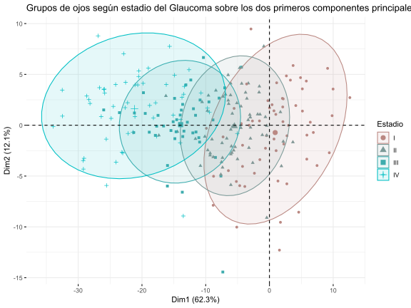
Clasificación mediante análisis discriminante (sin incluir sanos)
| Sano | I | II | III | IV | |
|---|---|---|---|---|---|
| Sano | 0 | 0 | 0 | 0 | 0 |
| I | 0 | 46 | 10 | 0 | 0 |
| II | 0 | 14 | 51 | 4 | 0 |
| III | 0 | 0 | 6 | 35 | 3 |
| IV | 0 | 0 | 0 | 5 | 52 |
| Sensibilidad | Especificidad | Precisión.Global | |
|---|---|---|---|
| Estadio I | 0.7667 | 0.9398 | 0.8532 |
| Estadio II | 0.7612 | 0.8868 | 0.824 |
| Estadio III | 0.7955 | 0.9505 | 0.873 |
| Estadio IV | 0.9455 | 0.9708 | 0.9581 |
Se observa que el 81.42% de los ojos están correctamente clasificados.
Representación de los grupos sobre los componentes principales (incluyendo sanos)
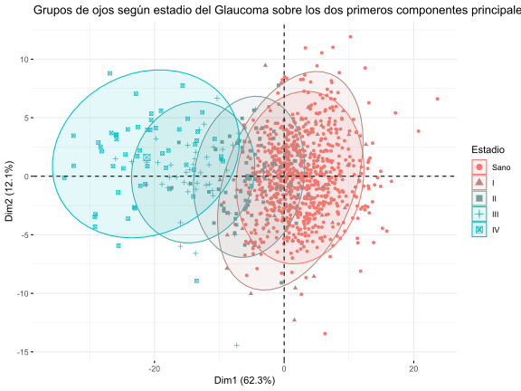
Distribución de los grupos de estadío del Glaucoma
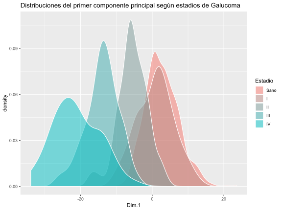
Clasificación mediante análisis discriminante (incluyendo sanos)
| Sano | I | II | III | IV | |
|---|---|---|---|---|---|
| Sano | 761 | 55 | 45 | 3 | 1 |
| I | 2 | 1 | 0 | 0 | 0 |
| II | 2 | 4 | 18 | 6 | 0 |
| III | 0 | 0 | 4 | 30 | 2 |
| IV | 0 | 0 | 0 | 5 | 52 |
| Sensibilidad | Especificidad | Precisión.Global | |
|---|---|---|---|
| Estadio Sano | 0.9948 | 0.5398 | 0.7673 |
| Estadio I | 0.01667 | 0.9979 | 0.5073 |
| Estadio II | 0.2687 | 0.987 | 0.6278 |
| Estadio III | 0.6818 | 0.9937 | 0.8377 |
| Estadio IV | 0.9455 | 0.9947 | 0.9701 |
Se observa que el 86.98% de los ojos están correctamente clasificados. Como se puede ver, al incluir los ojos sanos en el modelo, la fiabilidad del modelo disminuye significativamente.
Comparación de modelos
| Combinación de variables | Precisión |
|---|---|
| Primer componente principal | 0.9558 |
| Dos primeros componentes principaless | 0.9425 |
| Tres primeros componentes principales | 0.9469 |
| Todos los sectores de todos los anillos | 0.9646 |
| Sectores global y temporal inferior de todos los anillos | 0.9425 |
| Sectores globales de todos los anillos | 0.9646 |
| Sectores temporales inferiores de todos los anillos | 0.9027 |
| Sectores global y temporal inferior de los anillos BMO y 3.5 | 0.9159 |
| Sectores global y temporal inferior del anillos BMO | 0.8186 |
| Sectores global y temporal inferior del anillo 3.5 | 0.8805 |
| Sector global de los anillos BMO y 3.5 | 0.885 |
| Sector temporal inferior de los anillos BMO y 3.5 | 0.8053 |
| Sector global del anillo BMO | 0.9381 |
| Sector global del anillo 3.5 | 0.8894 |
| Sector temporal inferior del anillo BMO | 0.7522 |
| Sector temporal inferior del anillo 3.5 | 0.8142 |